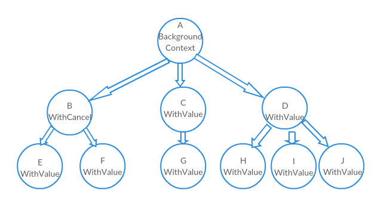

本文基于 go1.15.2 darwin/amd64
作用介绍
context的目的是实现主协程对子协程的控制，作用包括取消执行、设置超时时间、携带键值对等。
下面是一个使用context防止协程泄露的例子。不使用context，创建了goroutine之后没有办法取消，在程序退出之前，会一直打印”in go loop”。
1 | // 协程泄露的例子 |
为了实现对子协程的控制，一般在goroutine中添加对context信号的等待。
1 | func TestRoutine2(t *testing.T) { |
Context 内部结构
context包里面，有接口Context，对应四个实现emptyCtx, cancelCtx, timerCtx,valueCtx。
Context接口
1 | type Context interface { |
- Deadline：获取到期时间。如果没有到期时间，ok返回false。
- Done：返回一个
channel，表示取消的信号。如果通道关闭则代表该 Context 已经被取消；如果返回的为 nil，则代表该 Context 是一个永远不会被取消的 Context。 - Err：返回该 Context 被取消的原因。如果只使用 Context 包的 Context 类型的话，那么只可能返回 Canceled （代表被明确取消）或者 DeadlineExceeded （因超时而取消）。
- Value：获取Context中的键值对。
emptyCtx
emptyCtx是int类型的重新定义，它不是空的struct{}是因为每个这种类型的变量需要用不同的内存地址。emptyCtx没有过期时间，不能被取消。
1 | // An emptyCtx is never canceled, has no values, and has no deadline. It is not |
emptyCtx的作用是作为Context树的根节点。
1 | var ( |
cancelCtx
cancelFunc
1 | type CancelFunc func() |
调用函数WithCancel,WithTimeout,WithDeadline都会返回新的子Context和CancelFunc类型的函数。CancelFunc用于取消的操作。
cancenler接口
1 | // A canceler is a context type that can be canceled directly. The |
可以被取消的context都实现了这个接口。
cancelCtx内部结构
1 | type cancelCtx struct { |
cancelCtx每个字段作用：
- 包含了一个
Context类型的值，存储了当前cancelCtx的父Context的指针。 done作为取消信号的channel，子协程监听该通道了解到是否需要取消任务。children存储了当前Context衍生的所有可取消类型的子Context。err会被第一次取消的时候设置
cancelCtx实现了canceler接口。
下面看一下cancel(removeFromParent bool, err error)方法。
1 | // cancel closes c.done, cancels each of c's children, and, if |
如果
cancelCtx(父协程)被调用cancel方法，cancel会调用childeren里面每个子Context（子协程）的cancel方法。如果当前的
cancelCtx是一个子Context,它被取消了，其父 Context 的children中也就没有必要再存储该子Context了。这通过调用了removeChild来实现：根据存储的父 Context 向上一层层的找（由 parentCancelCtx 实现），如果父Context是已知的cancelCtx和timerCtx类型就从children中删除，如果是valueCtx类型则继续向上层查找其父Context。1
2
3
4
5
6
7
8
9
10
11
12
13
14
15
16
17
18
19
20
21
22
23
24
25
26
27
28
29
30
31
32
33
34
35
36// parentCancelCtx returns the underlying *cancelCtx for parent.
// It does this by looking up parent.Value(&cancelCtxKey) to find
// the innermost enclosing *cancelCtx and then checking whether
// parent.Done() matches that *cancelCtx. (If not, the *cancelCtx
// has been wrapped in a custom implementation providing a
// different done channel, in which case we should not bypass it.)
func parentCancelCtx(parent Context) (*cancelCtx, bool) {
done := parent.Done()
if done == closedchan || done == nil {
return nil, false
}
p, ok := parent.Value(&cancelCtxKey).(*cancelCtx)
if !ok {
return nil, false
}
p.mu.Lock()
ok = p.done == done
p.mu.Unlock()
if !ok {
return nil, false
}
return p, true
}
// removeChild removes a context from its parent.
func removeChild(parent Context, child canceler) {
p, ok := parentCancelCtx(parent)
if !ok {
return
}
p.mu.Lock()
if p.children != nil {
delete(p.children, child)
}
p.mu.Unlock()
}
WithCancel方法
WithCancel帮助创建一个子cancelCtx，并保证父Context取消时该新建的子cancelCtx也能被通知取消。
propagateCancel根据传入的父Context值沿着树向上查找到cancelCtx类型的节点，将新建的子cancelCtx加入到该节点的children中。如果发现父 Context 已经取消了，那么会立刻将当前新产生的子 Context 也取消掉。如果找不到
cancelCtx类型的节点的话，那么就要新启一个协程等待父Context被取消的时候明确调用新产生的子cancelCtx的取消函数，从而将parent和子cancelCtx组织成一树形结构。
1 | // WithCancel returns a copy of parent with a new Done channel. The returned |
Context树:

timerCtx
timerCtx是超时自动取消的Context，内部使用cancelCtx实现取消功能，它增加了定时器Timer，定时调用cancle函数实现该功能。
但是如果其父 Context 也有超时过期的取消功能，且父 Context 的超时时间点在传入的时间点之前，那么就没有必要再使用 timerCtx 生成子 Context 了，使用 WithCancel 就可以了。
1 | // A timerCtx carries a timer and a deadline. It embeds a cancelCtx to |
下面是WithTimeOut和WithCancel函数。
1 | // WithTimeout returns WithDeadline(parent, time.Now().Add(timeout)). |
valueCtx
valueCtx内部仍然使用Context存储父Context的指针，并用interface{}存储键值。
如果当前valueCtx找不到需要的key，会沿着树向上一直查找直到根节点，类似链表的搜索。
1 | // A valueCtx carries a key-value pair. It implements Value for that key and |
使用WithValue创建时，会判断key是否实现Comparable接口。如果没有实现，会触发panic。
1 | // Use context Values only for request-scoped data that transits processes and |
注释里写了，key的类类型不应该是内置类型，以避免冲突。使用的时候应该自定义类型：
1 | func main() { |
参考文档
我的公众号：lyp分享的地方
我的知乎专栏: https://zhuanlan.zhihu.com/c_1275466546035740672
我的博客：www.liangyaopei.com
Github Page: https://liangyaopei.github.io/